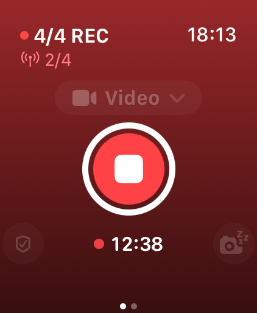
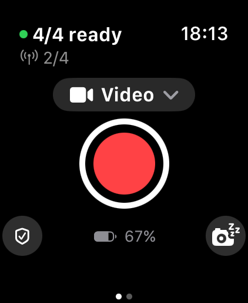
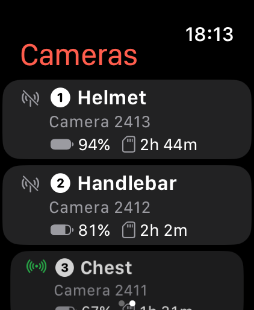
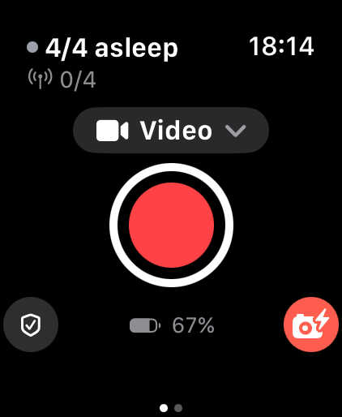

Start and stop all your action cameras with one tap on your wrist. One mode for the whole rig, battery and time left per camera, a haptic once every camera confirms.




For riders, crews and creators who run two or more action cameras at once. GoWrist Pro starts and stops your whole camera rig from your Apple Watch with one tap, on the helmet, handlebar, chest, car or boat, without taking out your iPhone.
ONE TAP FOR THE WHOLE RIG
Tap the big button or use Double Tap. GoWrist Pro connects to every selected camera over Bluetooth and starts or stops them together. Each camera has to confirm that it is really recording. Only then does the watch play a haptic, and the header counts the confirmed cameras, for example "3/4 REC". If a camera does not start, GoWrist Pro names it and offers Retry; the others keep recording.
ONE MODE FOR ALL CAMERAS
Choose Video, Photo or Time Lapse once for the whole rig. Only modes that every selected camera supports are offered
Before every shutter, GoWrist Pro checks the mode on each camera, so the rig never mixes photos and video
Arm the rig before you go: wakes every selected camera, matches the mode and reads battery and storage
Put the whole rig to sleep to save battery and wake it again without recording
KNOW EVERY CAMERA
Give each camera a number and a mount position (helmet, handlebar, chest and more) to tell identical cameras apart
Camera overview with connection, battery and remaining recording time or photos for each camera
Choose which paired cameras belong to the rig. Commands only go to the selected cameras
Stop or start a single camera from its details when needed
ALWAYS WITHIN REACH
Complication with the rig status on your watch face, for example "3/4 REC"
"Toggle Recording" control for Control Center and the Smart Stack, and for the Action Button on Apple Watch Ultra
COMPATIBILITY
Can be used with GoPro® HERO9 Black, HERO10 Black, HERO11 Black, HERO11 Black Mini, HERO12 Black, HERO13 Black and MAX 2 cameras, with current firmware. GoWrist Pro uses the publicly documented Open GoPro Bluetooth Low Energy API. You pair each camera once, in its pairing mode.
GOOD TO KNOW
Apple Watch keeps only a few Bluetooth connections at once (typically 2). Up to that number, your cameras start together. With more cameras, GoWrist Pro starts them in a quick wave, one after another, with a short delay per camera.
Starting and stopping runs while GoWrist Pro is open. With many cameras, keep the display on until all of them have confirmed.
GoWrist Pro never stops a running recording by itself. If a connection drops while recording, it shows that the camera may still be recording.
Live preview and media transfer are not available over Bluetooth; the cameras provide those features over Wi-Fi or USB.
Requires watchOS 26 or later. No iPhone app needed.
PRIVACY
No account, no tracking, no ads, no analytics. Your data stays on your watch. Details in the privacy policy. Your paired cameras and settings stay on your watch.